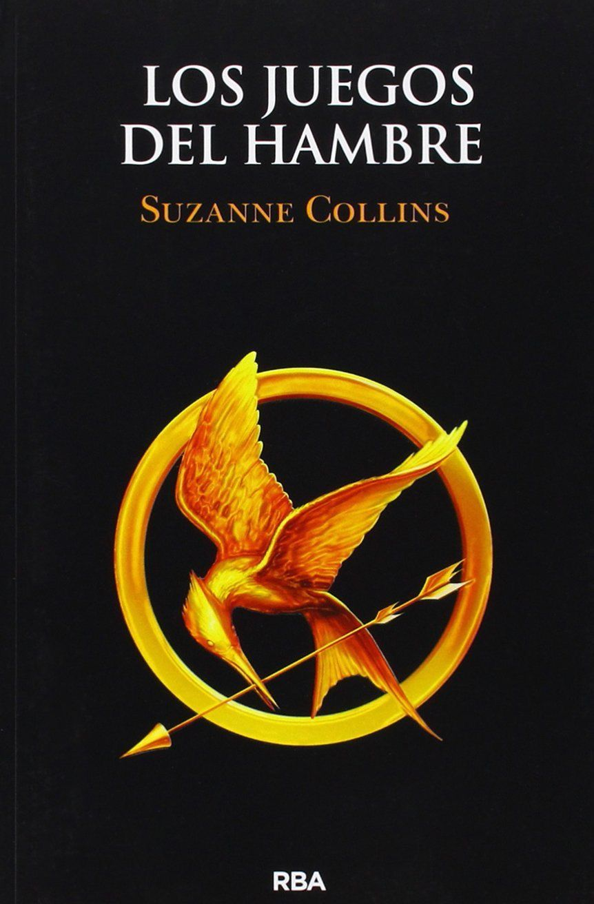

A continuación, encontrarás reseñas de tus libros favoritos
y enlaces para leerlos.
A todos los chicos de los que me enamoré - Jenny Han
La historia narra la vida de Lara Jean, una adolescente universitaria,
quien guarda un secreto: cada vez que se enamora de alguien, escribe una carta
-que nunca envía- para despedirse de ese amor. Todo da un giro, cuando,
mágicamente, sus cartas privadas llegan a manos de los destinatarios, incluyendo
su antiguo amor y el novio de su hermana. Para calmar el caos que esto provoca,
Lara Jean finge un romance con Peter, uno de los chicos, pero lo que comienza como
un juego, pronto se convierte más complejo y real.
Esta novela combina el romance adolescente, comedia y reflexiones familiares,
el crecimiento y el primer amor.
Video Resumen de la comparación del libro con la pelicula
Los juegos del hambre - Suzanne Collins
En un futuro distópico, la nación de Panem está dividida en 12 Distritos
que son controlados por el Capitolio. Todos los años, como castigo por una
antigua rebelión, se festejan "Los Juegos del Hambre", un evento televisado
en el que un hombre y una mujer de cada distrito deben luchar a muerte hasta
que solo uno de ellos sobreviva. Katniss Everdeen, una joven del empobrecido
Distrito 12, se ofrece voluntariamente para tomar el lugar de su hermanita
menor. Lo que empieza como un sacrificio, se convierte en un acto de resistencia.
Con una narrativa poderosa y ágil, "Los juegos del hambre" mezcla acción,
crítica social, drama psicológico y una protagonista valiente que desafía reglas
impuestas.
Video Resumen de la comparación del libro con la pelicula
Harry Potter - J.K. Rowling
Harry Potter es un niño huérfano que vive con sus malvados tíos y su
primo en una vida monótona y sin afecto. Todo cambia cuando, en su
undécimo cumpleaños, descubre que es un mago y ha sido aceptado en el Colegio
Hogwarts de Magia y Hechicería. Allí, Harry se sumerge en un mundo repleto
de hechizos, criaturas mágicas y amistades inolvidables. Sin embargo,
también enfrentará desafíos y descubrirá secretos sobre su pasado y el
oscuro mago que marcó su destino.
En su primera entrega de la saga, combina elementos de fantasía, aventura
y crecimiento personal, presentando una historia que cautivó lectores de
todas las edades. La narrativa de la autora es accesible y envolvente, haciendo
de esta obra una introducción perfecta al universo mágico de Harry Potter.